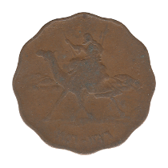
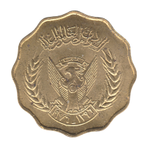

Ten Milliemes / One Qirsh
First Series
 1376 / 1956
Second Series
Large Round Type
First Scalloped Type
Second Scalloped Type
 1396 / 1976 FAO
Small Round Type
Third Series
Back to Sudan
Back to Home